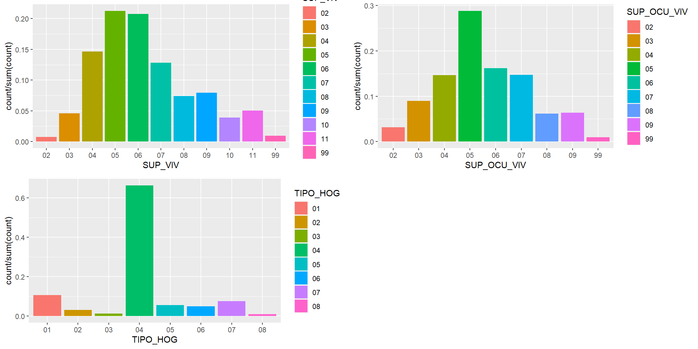
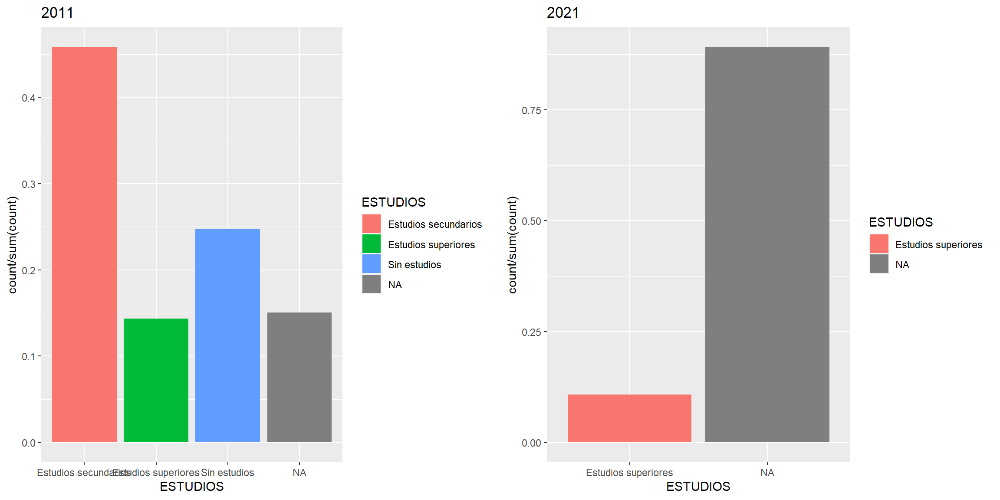

# Microdatos databasevariables <-c("CPRO", "CMUN", "NVIV", "VAREDAD", "SEXO", "PNACIO", "VARANORES", "ECIVIL", "ESREAL_CNEDA", "RELA", "SITU", "LEST", "TIPO_EDIF_VIV", "SUP_VIV", "TENEN_VIV", "SUP_OCU_VIV", "NPLANTAS_SOBRE_EDIF", "NPLANTAS_BAJO_EDIF", "ANO_CONS", "TIPOPER", "TAM_HOG", "ESTRUC_HOG", "TIPO_HOG")microdatos2021_limpio <- microdatos2021 |>select(all_of(variables))# Metadatos databaseDescripción <-c("Código de provincia", "Código municipio", "Identificador de vivienda/hogar", "Edad", "Sexo", "Código país de nacionalidad", "Año de llegada a la vivienda", "Estado civil", "Nivel de estudios", "Relación preferente con la actividad", "Situación profesional", "Lugar de estudio", "Tipo de edificio de vivienda", "Superficie", "Régimen de tenencia", "Superficie por ocupante", "Número de plantas sobre rasante", "Número de plantas bajo rasante", "Año de construcción", "Condición dentro del núcleo", "Tamaño del hogar", "Estructura del hogar", "Tipo de hogar")metadatos_limpio <- metadatos2021 |>filter(Variable %in% variables) |>mutate(Descripción = Descripción)
# Descriptivos de variablesa<-ggplot(microdatos2021_rec,mapping=aes(x=SITU, fill = SITU))+geom_bar(aes(y=..count../sum(..count..)))b<-ggplot(microdatos2021_rec,mapping=aes(x=SEXO, fill = SEXO))+geom_bar(aes(y=..count../sum(..count..)))c<-ggplot(microdatos2021_rec,mapping=aes(x=ECIVIL, fill = ECIVIL))+geom_bar(aes(y=..count../sum(..count..)))d<-ggplot(microdatos2021_rec,mapping=aes(x=ESREAL_CNEDA, fill = ESREAL_CNEDA))+geom_bar(aes(y=..count../sum(..count..)))ggarrange(a,b,c,d,ncol =2, nrow =2)
Warning: The dot-dot notation (`..count..`) was deprecated in ggplot2 3.4.0.
ℹ Please use `after_stat(count)` instead.
b<-ggplot(microdatos2021_rec,mapping=aes(x=SUP_VIV, fill = SUP_VIV))+geom_bar(aes(y=..count../sum(..count..)))c<-ggplot(microdatos2021_rec,mapping=aes(x=SUP_OCU_VIV, fill = SUP_OCU_VIV))+geom_bar(aes(y=..count../sum(..count..)))d<-ggplot(microdatos2021_rec,mapping=aes(x=TIPO_HOG, fill = TIPO_HOG))+geom_bar(aes(y=..count../sum(..count..)))ggarrange(b,c,d,ncol =2, nrow =2)

a<-ggplot(microdatos2021_rec,mapping=aes(y=VAREDAD))+geom_boxplot(fill="Orange")b <-ggplot(microdatos2021_rec,mapping=aes(x=HABITAT, fill = HABITAT))+geom_bar(aes(y=..count../sum(..count..)))ggarrange(a,b,ncol =2, nrow =1)
Cruces de variables
Cruce régimen de vivienda x Rural, Edad, Género, Superficie vivienda
Régimen de tenencia x Rural. El régimen mayoritario en municipios rurales es ‘Otro’ (cesión). Hay más alquiler en municipios urbanos.
Régimen de tenencia x Edad. El alquiler tiene una edad media más baja.
Régimen de tenencia x Género. No se aprecia ninguna diferencia, aunque puedan existir según la edad, por ejemplo.
Régimen de tenencia x Superficie de vivienda. Las viviendas de alquiler tienden a ser más pequeñas; menos en el caso de las viviendas con la mayor superficie. También son las que menos se conoce la superficie (99 = no consta).
#Régimen de tenencia x RURAL, EDAD, SEXO, Superficie viviendaa <-ggplot(microdatos2021_rec, aes(x = HABITAT, fill = TENEN_VIV)) +geom_bar(position ="fill", color ="white") +theme_minimal()b <-ggplot(microdatos2021_rec,mapping=aes(x=TENEN_VIV, y=VAREDAD))+geom_boxplot(fill="lightblue")c <-ggplot(microdatos2021_rec, aes(x = TENEN_VIV, fill = SEXO)) +geom_bar(position ="fill", color ="white") +theme_minimal()d <-ggplot(microdatos2021_rec, aes(x = SUP_VIV, fill = TENEN_VIV)) +geom_bar(position ="fill", color ="white") +theme_minimal()ggarrange(a,b,c,d,ncol =2, nrow =2)
Cruce de Rural con Superficie, Tipo de edificio, Superficie por ocupante, Nº de plantas sobre rasante, Año de construcción.
Rural x Superficie. Salvo las categorías de menor superficie (menos de 15m2), se observa una tendencia por la cual a mayor superficie mayor proporción de estas viviendas son rurales.
Rural x Superficie por ocupante. La misma tendencia, a mayor superficie por ocupante mayor proporción de viviendas en municipios rurales.
Rural x Tipo de edificio de vivienda. 2, 3, 4 = vivienda en edificio residencial con 1, 2, 3 viviendas o más. Son más frecuentes en municipios rurales los edificios residenciales con sólo una familia o los *edificios no residenciales.*
Rural x Nº de plantas sobre rasante. Existen menos edificios con varias plantas en las viviendas en municipios rurales.
Rural x Año de construcción. Hay menor proporción de viviendas más recientes en las zonas rurales.
#Rural x Superficie, Tipo de edificio, Superficie por ocupante, Nº plantas sobre rasante, Año de construccióna <-ggplot(microdatos2021_rec, aes(x = SUP_VIV, fill = HABITAT)) +geom_bar(position ="fill", color ="white") +theme_minimal()b <-ggplot(microdatos2021_rec, aes(x = SUP_OCU_VIV, fill = HABITAT)) +geom_bar(position ="fill", color ="white") +theme_minimal()c <-ggplot(microdatos2021_rec, aes(x = TIPO_EDIF_VIV, fill = HABITAT)) +geom_bar(position ="fill", color ="white") +theme_minimal()d <-ggplot(microdatos2021_rec, aes(x = NPLANTAS_SOBRE_EDIF, fill = HABITAT)) +geom_bar(position ="fill", color ="white") +theme_minimal()e <-ggplot(microdatos2021_rec, aes(x = ANO_CONS, fill = HABITAT)) +geom_bar(position ="fill", color ="white") +theme_minimal()ggarrange(a,b,c,d,e,ncol =2, nrow =3)
Comparación régimen de tenencia por provincias y CCAA
Primero se construye y añade la columna de CCAA compuesta por los códigos de provincia.
# Viviendas por régimen de tenencia por CCAA# Añadir columna ccaalibrary(dplyr)viviendas21 <- viviendas21 |>mutate(CPRO =as.character(CPRO)) ccaas <-data.frame(CodigoProvincia =c("01", "02", "03", "04", "33", "05", "06", "08", "09", "10", "11", "39", "12", "13", "14", "16", "17", "18", "19", "20", "21", "22", "23", "07", "24", "15", "35", "25", "26", "27", "28", "29", "30", "31", "32", "34", "36", "37","38", "39", "40", "41", "42", "43", "44", "45", "46", "47", "48", "49", "50", "51", "52"),CCAA =c("País Vasco", "Castilla-La Mancha", "Comunidad Valenciana", "Andalucía", "Asturias", "Castilla y León", "Extremadura", "Cataluña", "Castilla y León", "Extremadura", "Andalucía", "Cantabria", "Comunidad Valenciana", "Castilla-La Mancha", "Andalucía", "Castilla-La Mancha", "Cataluña", "Andalucía", "Castilla-La Mancha", "País Vasco", "Andalucía", "Aragón", "Andalucía", "Islas Baleares", "Castilla y León", "Galicia", "Canarias", "Cataluña", "La Rioja", "Galicia", "Comunidad de Madrid", "Andalucía", "Comunidad de Murcia", "Comunidad Foral de Navarra", "Galicia", "Castilla y León", "Galicia", "Castilla y León", "Canarias", "Cantabria", "Castilla y León", "Andalucía", "Castilla y León", "Cataluña", "Aragón", "Castilla-La Mancha", "Comunidad Valenciana", "Castilla y León", "País Vasco", "Castilla y León", "Aragón", "Ceuta", "Melilla"))viviendas21 <- viviendas21 |>left_join(ccaas, by =c("CPRO"="CodigoProvincia"))
Warning in left_join(viviendas21, ccaas, by = c(CPRO = "CodigoProvincia")): Detected an unexpected many-to-many relationship between `x` and `y`.
ℹ Row 69 of `x` matches multiple rows in `y`.
ℹ Row 28 of `y` matches multiple rows in `x`.
ℹ If a many-to-many relationship is expected, set `relationship =
"many-to-many"` to silence this warning.
microdatos2021_rec <- microdatos2021_rec |>left_join(ccaas, by =c("CPRO"="CodigoProvincia"))
Warning in left_join(microdatos2021_rec, ccaas, by = c(CPRO = "CodigoProvincia")): Detected an unexpected many-to-many relationship between `x` and `y`.
ℹ Row 143 of `x` matches multiple rows in `y`.
ℹ Row 49 of `y` matches multiple rows in `x`.
ℹ If a many-to-many relationship is expected, set `relationship =
"many-to-many"` to silence this warning.
Régimen de tenencia por CCAA y provincia
Alquiler. Las comunidades con mayor alquiler son Melilla, Comunidad de Madrid, Cataluña y Ceuta. Se pueden encontrar posibles motivos para ellas, pero se debería explorar más posibles relaciones entre precios, ingresos de la población y régimen de tenencia:
Madrid y Cataluña. Incluyen grandes ciudades donde mucha gente se muda por trabajo o estudios, lo que puede fomentar el alquiler, además de los altos precios de vivienda en las grandes ciudades.
Melilla y Ceuta. Puede que un menor nivel de ingresos de la población de estas ciudades, que es en gran medida inmigrante, haga que haya más alquiler que propiedad (se tendría que explorar más).
‘Otro’. Viviendas de cesión, donación. Sobresalen Canarias, Ceuta, Galicia y Extremadura.
No principal. Las comunidades con mayor proproción de viviendas no principales son Castilla y León, Castilla-La Mancha y Comunidad Valenciana. Tal vez la menor densidad de población y las llamadas zonas vaciadas dejan muchas viviendas sin ocupar como residencial principal.
Con respecto a las provincias, las que tienen mayor proporción de viviendas no principales (por encima del 50% del total) son Ávila, Teruel, Soria, Zamora y Ourense. Esto encaja con ser zonas con muy baja densidad de población y que quizá tienen muchas viviendas sin residentes principales actualmente. Por otra parte, las provincias con menor proporción de viviendas no principales son Gipuzkoa, Madrid, Bizkaia, Melilla y Ceuta. Esto puede deberse al fenómeno contrario, son ciudades con una alta densidad de población que puede indicar que haya menos viviendas no ocupadas, y quizá, una menor oferta disponible de vivienda.
# Porcentajes de regimen de tenencia por CCAAregimen_ccaa <- viviendas21 |>mutate(TENEN_VIV =as_factor(TENEN_VIV)) |>mutate(TENEN_VIV =fct_recode(TENEN_VIV,'No principal'=" ","Propiedad"="2","Alquiler"="3","Otro"="4")) |>group_by(CCAA, TENEN_VIV) |>summarize(n =n()) |>group_by(CCAA) |>mutate(Porcentaje =round((n /sum(n)) *100, 2))
`summarise()` has grouped output by 'CCAA'. You can override using the
`.groups` argument.
# Gráficos Régimen de tenencia por CCAAa <-ggplot(regimen_ccaa %>%filter(TENEN_VIV =="Propiedad"),aes(x =reorder(CCAA, -Porcentaje), y = Porcentaje, fill = TENEN_VIV)) +geom_bar(stat ="identity", position ="stack") +labs(title ="Propiedad por CCAA",fill ="Tipo de Régimen de Tenencia") +theme_minimal() +coord_flip(ylim=c(0, 75))b <-ggplot(regimen_ccaa %>%filter(TENEN_VIV =="Alquiler"),aes(x =reorder(CCAA, -Porcentaje), y = Porcentaje, fill = TENEN_VIV)) +geom_bar(stat ="identity", position ="stack", fill ="#2BB143") +labs(title ="Alquiler por CCAA",fill ="Tipo de Régimen de Tenencia") +theme_minimal() +coord_flip(ylim=c(0, 75))c <-ggplot(regimen_ccaa %>%filter(TENEN_VIV =="Otro"),aes(x =reorder(CCAA, -Porcentaje), y = Porcentaje, fill = TENEN_VIV)) +geom_bar(stat ="identity", position ="stack", fill ="#EEDD3A") +labs(title ="'Otro' por CCAA",fill ="Tipo de Régimen de Tenencia") +theme_minimal() +coord_flip(ylim=c(0, 75))d <-ggplot(regimen_ccaa %>%filter(TENEN_VIV =="No principal"),aes(x =reorder(CCAA, -Porcentaje), y = Porcentaje, fill = TENEN_VIV)) +geom_bar(stat ="identity", position ="stack", fill ="#3A7EEE") +labs(title ="No principal por CCAA",fill ="Tipo de Régimen de Tenencia") +theme_minimal() +coord_flip(ylim=c(0, 75))(a | b) / (c | d)
#Régimen de tenencia de las viviendas por provinciaregimen_provincias <- viviendas21 |>mutate(TENEN_VIV =as_factor(TENEN_VIV)) |>mutate(TENEN_VIV =fct_recode(TENEN_VIV,'No principal'=" ","Propiedad"="2","Alquiler"="3","Otro"="4")) |>group_by(CPRO, TENEN_VIV) |>summarize(n =n()) |>group_by(CPRO) |>mutate(Porcentaje =round((n /sum(n)) *100, 2))
`summarise()` has grouped output by 'CPRO'. You can override using the
`.groups` argument.
# TOP 5 provincias con más/menos vivienda no principalregimen_provincias |>filter(TENEN_VIV =="No principal") |>group_by(CPRO) |>summarize(PorcentajeNoPrincipal =max(Porcentaje)) %>%arrange(desc(PorcentajeNoPrincipal)) %>%head(5)
Se considera cuántos municipios rurales existen por provincia y por CCAA para poder vislumbrar alguna relación entre la presencia de municipios rurales y otros análisis de las CCAA como el régimen de tenencia. Se observa en el gráfico que las comunidades con más municipios rurales son Extremadura, Castilla-La Mancha, Castilla y León, Navarra, Cantabria… Finalmente son comunidades con poca población. Podría precisarse la definición y características de un municipio rural o no para encontrar resultados más relevantes y que no se basen únicamente en la población.
Correlación entre mayor proporción de municipios rurales y régimen de tenencia
Aparece que existe correlación distinta a 0, pero es un valor muy bajo y cercano a 0.
Modelo logístico binario: rural o no
En este modelo probamos predecir si un municipio es rural o no en base a la superficie de la vivienda, el número de plantas del edificio y el tipo de edificio. Tiene una True Positive Rate muy alta, acierta los casos que sí son rurales, pero su True Negative Rate es muy baja. Por lo cual, las características que se están midiendo en el modelo son indicativas de áreas rurales, pero también de otras zonas que no lo son.
library(caret)
Loading required package: lattice
Attaching package: 'caret'
The following object is masked from 'package:purrr':
lift
library(pROC)
Type 'citation("pROC")' for a citation.
Attaching package: 'pROC'
The following objects are masked from 'package:stats':
cov, smooth, var
#binario <- glm(RURAL ~ SUP_VIV + NPLANTAS_SOBRE_EDIF + TIPO_EDIF_VIV, data = microdatos2021_rec, family = binomial)#summary(binario)#curva roc#probabilidades <- predict(binario, type = "response")#curva_roc <- roc(microdatos2021_rec$RURAL, probabilidades)#plot(curva_roc, main = "Curva ROC", col = "blue", lwd = 2)#matriz de confusion#predicciones <- ifelse(probabilidades > 0.5, TRUE, FALSE)#matriz_confusion <- confusionMatrix(factor(predicciones), factor(microdatos2021_rec$RURAL))#print(matriz_confusion)
microdatos2011_limpio <- microdatos2011_limpio |>mutate(NACIONALIDAD =case_when( NACI ==108~"ESPAÑOLA",TRUE~"EXTRANJERA")) |>mutate(RELA_R =case_when( RELA ==1~"Ocupado", RELA ==2~"Parado", RELA ==3~"Parado", RELA %in%c(4, 5, 6) ~"Inactivo")) |>mutate(HABITAT =case_when( CMUN %in%c(991, 992, 993, 994) ~"Rural",TRUE~"Urbano")) |>mutate(ECIVIL =case_when( ECIVIL ==1~"Soltero", ECIVIL ==2~"Casado", ECIVIL ==3~"Viudo", ECIVIL %in%c(4, 5) ~"Divorciado o separado")) |>mutate(ESTUDIOS =case_when( ESREAL %in%c(1,2,3) ~"Sin estudios", ESREAL %in%c(4, 5, 6, 7) ~"Estudios secundarios", ESREAL %in%c(8, 9, 10, 11, 12) ~"Estudios superiores"))#VIVIENDASviviendas11 <- viviendas11 |>mutate(TENEN_R =case_when( TENEN %in%c(1, 2, 3) ~"Propiedad", TENEN ==4~"Alquiler", TENEN %in%c(5,6) ~"Otro",TRUE~"No principal")) |>mutate(HABITAT =case_when( CMUN %in%c(991, 992, 993, 994) ~"Rural",TRUE~"Urbano")) |>mutate(PRINCIPAL =case_when( CVIVIF ==1~"Principal", CVIVIF ==2~"Secundaria", CVIVIF ==3~"Vacía")) |>mutate(SUT_R =case_when( SUT <=30~"Hasta 30 m2", SUT >30& SUT <=45~"31-45 m2", SUT >45& SUT <=60~"46-60 m2", SUT >60& SUT <=75~"61-75 m2", SUT >75& SUT <=90~"76-90 m2", SUT >90& SUT <=105~"91-105 m2", SUT >105& SUT <=120~"106-120 m2", SUT >120& SUT <=150~"121-150 m2", SUT >150& SUT <=180~"151-180 m2", SUT >180~"Más de 180 m2")) |>mutate(ANOCONS_R =case_when( ANOCONS ==2~"<1900", ANOCONS ==3~"1900 a 1920", ANOCONS ==4~"1921 a 1940", ANOCONS ==5~"1941 a 1950", ANOCONS ==6~"1951 a 1960", ANOCONS ==7~"1961 a 1970", ANOCONS ==8~"1971 a 1980", ANOCONS ==9~"1981 a 1990", ANOCONS ==10~"1991 a 2001", ANOCONS ==11~"2002", ANOCONS ==12~"2003", ANOCONS ==13~"2004", ANOCONS ==14~"2005", ANOCONS ==15~"2006", ANOCONS ==16~"2007", ANOCONS ==17~"2008", ANOCONS ==18~"2009", ANOCONS ==19~"2010", ANOCONS ==20~"2011"))rm(microdatos2021, microdatos2021_limpio, microdatos2011)
Análisis univariable censo 2011
Las variables de la población se analizan al compararlas con el censo de 2021. Sobre las viviendas:
Estado. En su gran mayoría los edificios están en un estado ‘Bueno’.
Ascensor, accesbilidad, agua caliente central. Más o menos en la misma proporción, la mayoría de edificios cuentan con estos servicios. No se va a desarrollar mucho más estas variables pues desaparecen en el censo de 2021, que serían los datos que nos interesan más.
#Edada <-ggplot(microdatos2011_limpio,mapping=aes(x=EDAD, fill = EDAD))+geom_bar(aes(y=..count../sum(..count..)))b <-ggplot(microdatos2021_rec,mapping=aes(y=VAREDAD))+geom_boxplot(fill="Orange")ggarrange(a,b,ncol =2, nrow =1)
Warning: The following aesthetics were dropped during statistical transformation: fill
ℹ This can happen when ggplot fails to infer the correct grouping structure in
the data.
ℹ Did you forget to specify a `group` aesthetic or to convert a numerical
variable into a factor?
#Estado civila <-ggplot(microdatos2011_limpio,mapping=aes(x=ECIVIL, fill = ECIVIL))+geom_bar(aes(y=..count../sum(..count..)))#Nacionalidadb <-ggplot(microdatos2011_limpio,mapping=aes(x=NACIONALIDAD, fill = NACIONALIDAD))+geom_bar(aes(y=..count../sum(..count..)))#Relación laboralc <-ggplot(microdatos2011_limpio,mapping=aes(x=RELA_R, fill = RELA_R))+geom_bar(aes(y=..count../sum(..count..)))#Municipios ruralesd <-ggplot(microdatos2011_limpio,mapping=aes(x=HABITAT, fill = HABITAT))+geom_bar(aes(y=..count../sum(..count..)))ggarrange(a,b,c,d,ncol =2, nrow =2)
# VIVIENDAS#Estadoviviendas11$ESTADO <-factor(viviendas11$ESTADO)a <-ggplot(viviendas11,mapping=aes(x=ESTADO, fill = ESTADO))+geom_bar(aes(y=..count../sum(..count..)))+labs(title ="2011")#Ascensorviviendas11$ASCENSOR <-factor(viviendas11$ASCENSOR)b <-ggplot(viviendas11,mapping=aes(x=ASCENSOR, fill = ASCENSOR))+geom_bar(aes(y=..count../sum(..count..)))+labs(title ="2011")#Accesibilidadviviendas11$ACCESIB <-factor(viviendas11$ACCESIB)c <-ggplot(viviendas11,mapping=aes(x=ACCESIB, fill = ACCESIB))+geom_bar(aes(y=..count../sum(..count..)))+labs(title ="2011")#Agua caliente centralviviendas11$ACAL <-factor(viviendas11$ACAL)d <-ggplot(viviendas11,mapping=aes(x=ACAL, fill = ACAL))+geom_bar(aes(y=..count../sum(..count..)))+labs(title ="2011")ggarrange(a,b,c,d,ncol =2, nrow =2)
Comparación censo 2011- 2021
Las características de la población afectarán a cuáles son las tendencias con respecto a la vivienda.
Edad. La población está más envejecida en 2021.
Estado civil. En 2021 se invierte la tendencia de 2011 y hay más solteros que casados. También aumenta ligeramente la cantidad de personas divorciadas.
Nacionalidad. Ha aumentado la población extranjera.
Relación laboral. Hay menos personas desempleadas en 2021.
Con respecto a las características de las viviendas:
Régimen de tenencia. En 2021 han aumentado las viviendas de alquiler en comparación con el 2011 en un 5%, en detrimento de la tenencia en propiedad. Hay menos personas propietarias de vivienda, y más que recurren al alquiler. Por otra parte, la categoría de ‘otro’ se mantiene estable, al igual que la cantidad de viviendas no principales.
Viviendas principales. La cantidad de viviendas principales se ha mantenido igual. En 2011 había casi el doble de viviendas secundarias que vacías, pero en 2021 ya no se pueden comparar esos datos. Alrededor de un 30% de las viviendas son no principales (10% vacías, 19% secundarias).
Superficie. La media de la superficie de las viviendas principales es de 90 metros cuadrados en 2021, siendo menor a la media de 2011 (101 m2). La mediana en 2021 es de 78, también menor a 2011. La superficie de las viviendas ahora es más reducida.
#Estado civila<-ggplot(microdatos2011_limpio,mapping=aes(x=ECIVIL, fill = ECIVIL))+geom_bar(aes(y=..count../sum(..count..)))+labs(title ="2011")b<-ggplot(microdatos2021_rec,mapping=aes(x=ECIVIL, fill = ECIVIL))+geom_bar(aes(y=..count../sum(..count..)))+labs(title ="2021")ggarrange(a,b,ncol =2, nrow =1)
#Nacionalidada <-ggplot(microdatos2011_limpio,mapping=aes(x=NACIONALIDAD, fill = NACIONALIDAD))+geom_bar(aes(y=..count../sum(..count..)))+labs(title ="2011")b <-ggplot(microdatos2021_rec,mapping=aes(x=NACIONALIDAD, fill = NACIONALIDAD))+geom_bar(aes(y=..count../sum(..count..)))+labs(title ="2021")ggarrange(a,b,ncol =2, nrow =1)
#Relación laborala <-ggplot(microdatos2011_limpio,mapping=aes(x=RELA_R, fill = RELA_R))+geom_bar(aes(y=..count../sum(..count..)))+labs(title ="2011")b <-ggplot(microdatos2021_rec,mapping=aes(x=RELA_R, fill = RELA_R))+geom_bar(aes(y=..count../sum(..count..)))+labs(title ="2021")ggarrange(a,b,ncol =2, nrow =1)
#Nivel de estudiosa<-ggplot(microdatos2011_limpio,mapping=aes(x=ESTUDIOS, fill = ESTUDIOS))+geom_bar(aes(y=..count../sum(..count..)))+labs(title ="2011")b<-ggplot(microdatos2021_rec,mapping=aes(x=ESTUDIOS, fill = ESTUDIOS))+geom_bar(aes(y=..count../sum(..count..)))+labs(title ="2021")ggarrange(a,b,ncol =2, nrow =1)

#Hábitat rural o urbanoa <-ggplot(microdatos2011_limpio,mapping=aes(x=HABITAT, fill = HABITAT))+geom_bar(aes(y=..count../sum(..count..)))+labs(title ="2011")b <-ggplot(microdatos2021_rec,mapping=aes(x=HABITAT, fill = HABITAT))+geom_bar(aes(y=..count../sum(..count..)))+labs(title ="2021")ggarrange(a,b,ncol =2, nrow =1)
#VIVIENDAS#Régimen de tenenciaa<-ggplot(viviendas11,mapping=aes(x=TENEN_R, fill = TENEN_R))+geom_bar(aes(y=..count../sum(..count..)))+labs(title ="2011")+coord_cartesian(ylim =c(0, 0.6))b<-ggplot(viviendas21,mapping=aes(x=TENEN_VIV_R, fill = TENEN_VIV_R))+geom_bar(aes(y=..count../sum(..count..)))+labs(title ="2021")+coord_cartesian(ylim =c(0, 0.6))(mean(viviendas21$TENEN_VIV_R=="Alquiler", na.rm =TRUE) *100)-(mean(viviendas11$TENEN_R=="Alquiler", na.rm =TRUE) *100)
[1] 5.105709
#Vivienda principal o noa<-ggplot(viviendas11,mapping=aes(x=PRINCIPAL, fill = PRINCIPAL))+geom_bar(aes(y=..count../sum(..count..)))+labs(title ="2011")b<-ggplot(viviendas21,mapping=aes(x=PRINCIPAL, fill = PRINCIPAL))+geom_bar(aes(y=..count../sum(..count..)))+labs(title ="2021")mean(viviendas11$PRINCIPAL =="Vacía") *100
[1] 10.64534
mean(viviendas11$PRINCIPAL =="Secundaria") *100
[1] 19.64396
ggarrange(a,b,ncol =2, nrow =1)
#Superficiea<-ggplot(viviendas11,mapping=aes(x=SUT_R, fill = SUT_R))+geom_bar(aes(y=..count../sum(..count..)))+labs(title ="2011")+coord_cartesian(ylim =c(0, 0.25))b<-ggplot(viviendas21,mapping=aes(x=SUPERF_R, fill = SUPERF_R))+geom_bar(aes(y=..count../sum(..count..)))+labs(title ="2021")+coord_cartesian(ylim =c(0, 0.25))mean(viviendas11$SUT)
[1] NA
mean(viviendas21$SUPERF, na.rm =TRUE)
[1] 90.58969
median(viviendas11$SUT, na.rm =TRUE)
[1] 90
median(viviendas21$SUPERF, na.rm =TRUE)
[1] 78
ggarrange(a,b,ncol =2, nrow =1)
#Año de construccióna<-ggplot(viviendas11,mapping=aes(x=ANOCONS_R, fill = ANOCONS_R))+geom_bar(aes(y=..count../sum(..count..)))+labs(title ="2011")b<-ggplot(viviendas21,mapping=aes(x=ANOCO_R, fill = ANOCO_R))+geom_bar(aes(y=..count../sum(..count..)))+labs(title ="2021")ggarrange(a,b,ncol =2, nrow =1)
Warning in left_join(viviendas11, ccaas, by = c(CPRO = "CodigoProvincia")): Detected an unexpected many-to-many relationship between `x` and `y`.
ℹ Row 23100 of `x` matches multiple rows in `y`.
ℹ Row 1 of `y` matches multiple rows in `x`.
ℹ If a many-to-many relationship is expected, set `relationship =
"many-to-many"` to silence this warning.
Vacías. Las comunidades con más viviendas sin ocupar son Galicia, La Rioja y Murcia.
Secundarias. Las comunidades con más viviendas secundarias son Castilla y León, Castilla-La Mancha y Aragón.
En general, se observa que son comunidades con menor población o densidad de población. Ya se veía en los datos del censo de 2021 que las comunidades con más viviendas no principales eran estas mismas, por lo cual vemos que se sigue manteniendo esta tendencia. No podemos distinguir sin embargo cómo ha cambiado las viviendas vacías y secundarias específicamente. Parece que la gran cantidad de viviendas no principales en estas comunidades se debe más a la existencia de viviendas secundarias en lugar de vacías.
a <- viviendas11 |>group_by(CCAA) |>summarize(PorcentajeViviendasVaciasCCAA =round(mean(PRINCIPAL =="Vacía") *100, 2)) |>arrange(desc(PorcentajeViviendasVaciasCCAA)) |>ggplot(aes(x =reorder(CCAA, -PorcentajeViviendasVaciasCCAA), y = PorcentajeViviendasVaciasCCAA)) +geom_bar(stat ="identity", fill ="skyblue") +labs(title ="Porcentaje de Viviendas Vacías por Comunidad Autónoma",x ="Comunidad Autónoma",y ="Porcentaje de Viviendas Vacías") +theme_minimal() +theme(axis.text.x =element_text(angle =45, hjust =1))b <- viviendas11 |>group_by(CCAA) |>summarize(PorcentajeViviendasSecundariasCCAA =round(mean(PRINCIPAL =="Secundaria") *100, 2)) |>arrange(desc(PorcentajeViviendasSecundariasCCAA)) |>ggplot(aes(x =reorder(CCAA, -PorcentajeViviendasSecundariasCCAA), y = PorcentajeViviendasSecundariasCCAA)) +geom_bar(stat ="identity", fill ="skyblue") +labs(title ="Porcentaje de Viviendas Secundarias por Comunidad Autónoma",x ="Comunidad Autónoma",y ="Porcentaje de Viviendas Secundarias") +theme_minimal() +theme(axis.text.x =element_text(angle =45, hjust =1))c <-ggplot(regimen_ccaa %>%filter(TENEN_VIV =="No principal"),aes(x =reorder(CCAA, -Porcentaje), y = Porcentaje, fill = TENEN_VIV)) +geom_bar(stat ="identity", position ="stack", fill ="#3A7EEE") +labs(title ="No principal por CCAA",fill ="Tipo de Régimen de Tenencia") +theme_minimal() +coord_flip(ylim=c(0, 75))ggarrange(a,b,c,ncol =2, nrow =2)
Modelo viviendas vacías
modelo <-lm(PRINCIPAL =="Vacía"~ HABITAT, data = viviendas11)summary(modelo)
Call:
lm(formula = PRINCIPAL == "Vacía" ~ HABITAT, data = viviendas11)
Residuals:
Min 1Q Median 3Q Max
-0.12540 -0.12540 -0.12540 -0.07918 0.92082
Coefficients:
Estimate Std. Error t value Pr(>|t|)
(Intercept) 0.1253971 0.0002609 480.6 <2e-16 ***
HABITATUrbano -0.0462209 0.0004072 -113.5 <2e-16 ***
---
Signif. codes: 0 '***' 0.001 '**' 0.01 '*' 0.05 '.' 0.1 ' ' 1
Residual standard error: 0.3075 on 2356882 degrees of freedom
Multiple R-squared: 0.005437, Adjusted R-squared: 0.005437
F-statistic: 1.288e+04 on 1 and 2356882 DF, p-value: < 2.2e-16